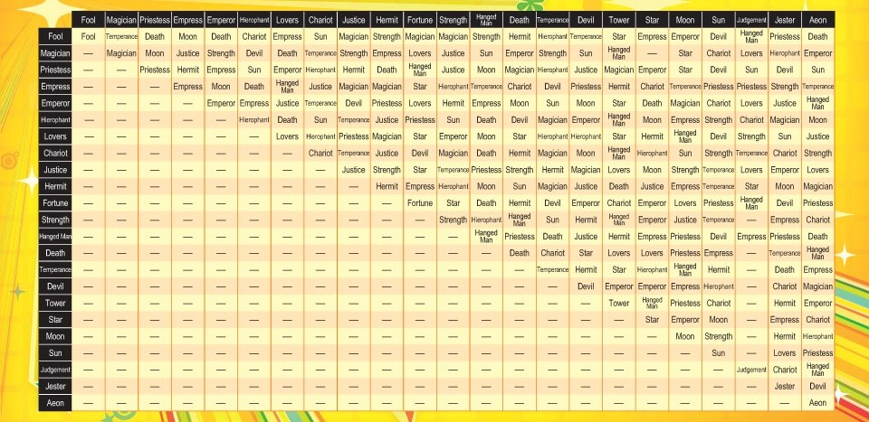

Reason#4: Endless Sidequests

The battle of maintaining fresh friendships has got to be one of the most time, effort, and emotionally consuming investments of all time. Prepare yourself for unsolicited responsibilities and dramas just to make sure they won’t cut you off randomly. However, in Persona 4, you are free to choose whom you would like to spend time with and it doesn’t punish you much for turning down a friend or two, or if you didn’t hang out with a specific person in a week.
Here is more to why the game’s mechanic is not draining:
- Sidequests can be turned down
- Tons of save options to undo mistakes
- Straight-to-the-point instructions; there is no need to decipher human emotions
- You can run through things they have said for you to think and reflect on which options to choose from
Instead, reality throws us the:
- Ultimatums
- There goes our years of friendship because of a small miscommunication
- More and more ambiguous phrases that are not on my “Phsyc 101” book
- Anything is fine (it’s not)